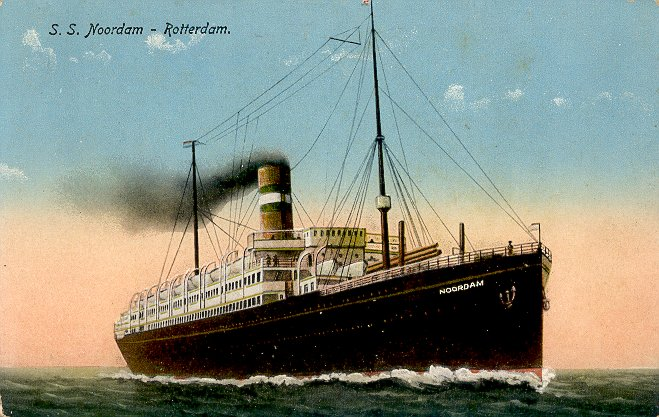
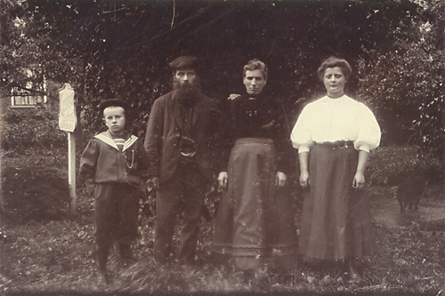
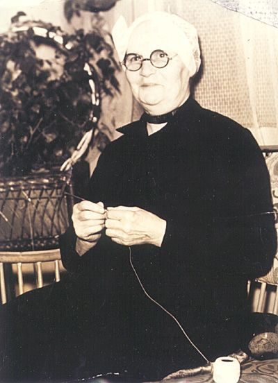
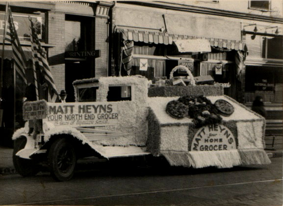
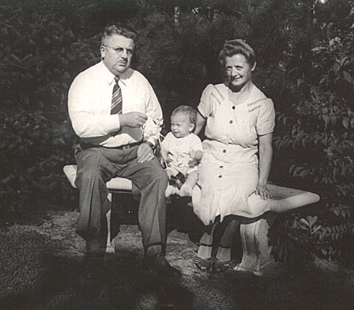
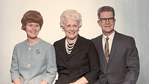
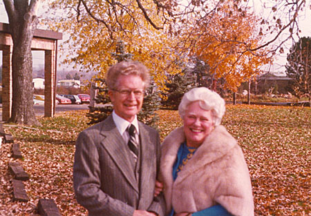
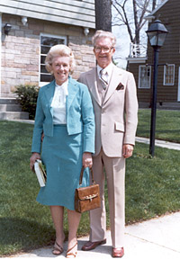
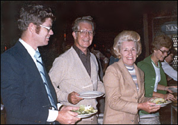

The Story of Matt's Self Serve, Cash and Carry
Matthijs Heijns started and owned some of the first grocery stores with aisles where shoppers could select their own items. Matthijs's son William says, "My Dad's grocery business was known as Matt's Self Serve, Cash and Carry." Matt's Grandson Larry Heyns adds that Matthijs was also president of the Michigan Retail Grocers and Meat Dealers Association and director of Grocers Co-operative Dairy Company.
The Dutch Roseman
Matthijs arrived in the US in 1910, at the age of 19, to apply his skill propagating rose bushes in Roseacres, Mississippi.
In its heyday, Roseacres had its own post office from which thousands of rose bushes were shipped to every state in America.
Matt had learning his gardening skills working at the Kersbergen Brothers Nursery in the Netherlands, and it's likely that relatives in both countries arranged the overseas work connection.
The next year, Matt returned to the Netherlands and eloped with Anna Kersbergen, the daughter of his rose gardening mentor. Together Matt and Anna set sail for America on the Holland America Noordam I. Grandson Larry notes that traveling as an unmarried, unchaperoned couple was frowned on in those days.
Matt and Anna married once they arrived in the Port of New York in Hoboken, NJ on August 28,1911.
The newlyweds continued to Roseacres, Mississippi, where Matt would work in the rose gardens for eight years.

After their first year, Anna visited family in the Netherlands with one-year-old William.
Picture of
Anna's step-brother Liebert Kersbergen, her father Johannes, her step-mother and Anna.

Anna E. Kersbergen's father, Johannes Kersbergen was the son of Piet Kersbergen and Woutrien Spyker.
Anna's mother, Constansia Jansen, was the daughter of a Mr. Jansen and Anna E. De Jong.
Matthijs Heijns (Matt Heyns)
Matthijs Heijns (Matt Heyns)
(b. Moerkapelle Feb 11, 1891 - d. Mar 5, 1951)
Anna E. Kersbergen
(b. Nov 2, 1892 - d. Apr 29, 1964)
Matthijs and Anna married in 1911 in Hoboken, NJ USA after eloping from the Netherlands.
Son: William John Heyns (b. Roseacres, MS, USA Sep 11, 1912 - d. April 2, 2011)
Matt and Anna's son William (Bill) was born in Mississippi on Sept 11, 1912. About 1918 or 1919 they moved to Holland, Michigan, where Matt worked in a furniture factory, but the dust bothered him. He took a job with the Grand Rapids Park Department and a tree saw fell on his shoulder, causing permanent weakness in that arm. He became a stock boy for Piggly-Wiggly until food manufactures provided loans to open his own store.
Matthijs's petitioned for naturalization on the 4th. day of January, 1922 and received an Order of the Court Admitting Petitioner dated 18th day of September, 1922. Prior to Sept. 22, 1922 the wife became naturalized upon citizenship being conferred to her husband. This also applied to any children under age 21. William writes, "My Dad's papers were granted on Sept. 18, 1922 -- that was close."
I think Bill was a child in Grand Rapids by age five. At age twelve (1924), Bill went back to the Netherlands with his mother and they returned to America with Matt's younger brother Jon who learned the grocery business from Matt. Matt, Anna, and Bill went to the Netherlands in 1929 and took their car on the ship.
Ryna Heyns trip to Grand Rapids
Read of Mrs. Ryna Heyns of the Netherlands and Her Charming Impressions of America.
This Article was in the Grand Rapids Press in 1936 along with the following 3 ½ X 5 picture of Rijna. Rijna visited Grand Rapids in 1933 when her grandson William was attending Hope College. She wondered why Americans used refrigertors during winter when food could be kept fresh by placing it outside.

"The last of life, for which the first was made."
The figure in this picture portraying the mellow contentment of age is MRS RYNA HEYNS, on her first visit from the Netherlands to the United States and marvelous Grand Rapids. She thinks it isn't fair for her son to do "so much business." Can't see the logic in heating an entire house and at the same time spend money to keep things cool.
Vastness of America, speed of traffic, merchandising methods and the people all combine to make this country truly a new world for Mrs. Ryna Heyns, who has spent all of her 74 years in South Holland, The Netherlands.
Of course she had read about America, the land to which her son Matt had gone 25 years ago and her son John in 1922. She had read the the state of Michigan was a third larger than all of Holland. She had read of the credit extended in the operation of business enterprise.
AND IT WAS ALL TRUE!
But not until she arrived here a few days ago did she realize that all of the things she had read about were true. 'I'm quite tired, let's hurry home," she told her son, Matt Heyns, 101 Cheshire Dr. N.E., who met her at the boat in New York to take her by motorcar to his home here for a visit. And then the ride! At a speed she never expected to experience, the car sped across New York State, through Ontario and then across Michigan. "All in two days!"
"How does Matt know the way home?" she inquired of Mrs. Matt Heyns after they had traveled some distance. And then it was explained that he watched the highway markers. It was some time, however, before it all was understandable, and then she joined in and watched the numbered signs. She thought it was fun. The speed was all right with her. She liked it.
Her first meal in America was grand American waffles were fine, but when she found the order served her in the Albany N.Y. restaurant was too much for her, she wrapped the leftover in a napkin and ate it en route.
She heard about Niagara Falls; the splendor of the scene thrilled her.
Hotels were new in her life. She had seen them on her visits to Rotterdam, the metropolis and seaport of her native state, but now she had spent two nights in them!
And when the party crossed the river at Port Huron and landed in Michigan, surely they must be near home.
DISTANCE - DISTANCE - DISTANCE!
It was 2 o"clock in the afternoon when they arrived at Owosso and Matt went into a drug store to telephone his brother John, in Grand Rapids, advising him to arrange for dinner. "I just talked on the phone with John," Matt told his mother. Then after riding an hour more, she began to realize that John must have been a long way from where Matt had telephoned and she marveled at the ease with which people in America communicate.
AND THEN THE PALACE!
But her greatest thrills were yet to come. She arrived at Matt?s fine home. Matt, her son, who at the age of 17 had left his father's dairy farm to go to America. She had seen beautiful homes in The Netherlands, but this one ? her son's- was it possible?
There were many things about the house that fascinated Mrs. Heyns. The glistening white box in the kitchen she learned was a device to keep things cold. And the plant in the basement was a steam boiler, fired for the purpose of heating the house!
And now after several days at the home, she still can't feel the logic of shoveling fuel into the furnace to heat the entire house, not just a couple of rooms, as is customary in her native land, and then installing a machine that operated 24 hours a day to cool the foodstuffs. It's a waste to her way of reasoning. The frequently reminds Matt that he ?had better training at home.?
Just as Matt explained to her American merchandising methods and took her to visit a store - also his!
THE MARVELS OF BUSINESS.
She found groceries, vegetables, baked goods, meats and other provisions. In the Netherlands business are operated differently, each commodity being sold in a separate store.
Here she paused to chastise her son. She thought he was "greedy trying to keep his competitors from doing business." The baker, the butcher and the fruit merchant, she said, each should handle his line and Matt should handle his own specialty.
And she still can't understand why merchants light the front of their shops after closing hour.
In a few days she has been in Grand Rapids she has met friends she had known from the Netherlands. She has visited churches in the city and all-in-all believes Grand Rapids is just about the "grandest' place on earth.
Mrs. Heyns came here for the twenty-fifth wedding anniversary year of her son Matt. Her mother, only three months short of 100 years old died about a year ago.
Mrs. Heyns' health is excellent.
Rijna's Family Tree
Heijns and Meijer
Bill's neice Cheryl Dalton writes 5/16/2003: Dear Bill, today I chatted with Fred Meijer at the store and he remembers you and asked if I saw you. I told him you were 90 and he said he was 84. He remembers your dad using you (and your legal skills) as a threat for shoplifters and also visiting upstairs on S. Division your dad and Irene. He is quite a talker and his wife kept trying to say 'we have to go'. He certainly has done neat things for our community and I do like shopping at Meijers. What a terrific store at Knapp's Corners.
Hi, Cheryl: It was neat that you could chat with Fred Meijer (a millionaire) and I feel honored that he remembers me after all these years. He must have a great memory as well as business ability. Enjoy the weather and have a great week. - Bill -

Matt Heyns Food Truck

Matthijs and Anna Heyns and grandson Larry at Cheshire Drive house, 1942.
William John Heyns
William John Heyns
(b. Roseacres, MS, US, Sep 11, 1912 - d. Grand Rapids, MI, US, April 2, 2011)
Anne Van Den Berg
(b. Nov 10, 1914 - d. May 4, 1978)
Married: April 22, 1939
Children: Larry and Marcia
In July, 1929, William and his parents traveled to the Netherlands to visit family. Read William's Travel Diary.
William graduated from Hope College, Holland, Michigan in 1934 (President of Senior Class) - AB degree - Student Manager in Football, 1933-34. Member, Blue Key Honor Society. Graduated from University of Michigan Law School, Ann Arbor, Michigan - 1937 with an LLB and a JD (Juris Doctor) degree. Member of Delta Theta Phi Law Fraternity and "Barristers."
Following college, William was employed by Travelers Insurance Company (Claim Department) 1937-42; Allaben & Wiarda, Attorneys 1942-47. Associate in firm of Verspoor & Heyns, Attorneys 1947-64; Heyns & Vander Werff, Attorneys 1984-92 when he retired. Engaged in the General Practice of Law handling Business, Contracts, Real Estate, Abstracts, Probate, Wills, Trusts and Estates, Workmens Compensation, Liability & Personal Injuries, Domestic Relations, Criminal Appeals (by Court Appointment), Immigration matters and other legal problems. William served as Special Assistant Prosecuting Attorney for Kent County - 1952-57. Chairman of War Bond Drive - 1944. Served on the Board of Central Volunteers (Kent County Community Chest) - 1947-50 - (Pres. - 1949); Board of Bethany Christian Home, Grand Rapids -1948- 54 - V. Pres. - 1953.
Member of G, R. Junior Chamber of Commerce, State Bar of Michigan; G.R. Bar Association (Secretary - 1942); American Bar Association and Kiwanis Club of G. R. Member of Garfield Park Reformed Church, (served as Deacon and Clerk of consistory) 1939-56; Shawnee Park Christian Reformed Church (served as Elder and Clerk of Consistory) 1956-79; Calvin Christian Reformed Church 1979 to present.

Marcia, mother Anne and father William Heyns
Grandson Loren recalls, one of my favorite memories of the years my dad was kicking around single was visiting his parents in their RV at Glen Lake by Sleeping Bear Dunes. His sister Marcia and her husband Georgia and daughter Jodi, who was about 5, would come up from St. Joeseph Michigan and we'd own that lake for a few days. My Grandmother Anne Heyns would prepare a multi-course breakfast with eggs, pancakes, bacon, grapefruit, orange juice - all in the small space of the RV. One day my dad's glasses flew off while he was water sking and my Uncle George somehow triangulated the exact position. It was dusk, so we came back the next day and George dove down about 12 feet using my snorkel mask to find the glasses right away.

William and Anne on Oct 30, 1977 at Red Brick Inn, Plainwell, MI
celebrating son Larry and his wife Darlene's one month wedding anniversary.
Sadly, Anne died of breast cancer May 4 in 1978.

William remarried Jan 20, 1979 to Anne's sister Marian Van Den Berg (Verwys).

Larry Heyns, his dad Bill, Aunt and step-mother Marian and Sister Marcia.
Marian (Verwys) Heyns
b. April 15, 1916 in Grand Rapids, MI.
d. April 11, 2010.
Parents, John and Mary VanDen Berg
Sister, Anne Heyns
Brother, Harold VanDen Berg
Marian graduated from Grand Rapids Christian High School and Calvin College. She was an accomplished pianist and vocalist, and a superb cook. Her family and friends treasured Marian for her vibrance, creativity, courage, and laughter.
{kind=link}
{kind=link}
{kind=link}